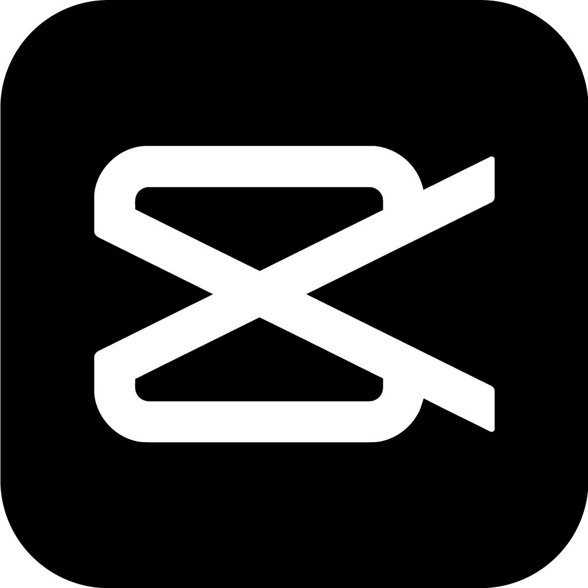

My Skills
Some Skills I Have
Web Development
Memiliki kemampuan di bidang Pemrograman Website Front-end dan Back-End.
UI/UX Design
Memiliki kemampuan dibidang desain layout Aplikasi Mobile dan Website.
Desain Grafis & Video
Memiliki kemampuan dibidang desain grafis (Sosial Media Design) dan editing video.
